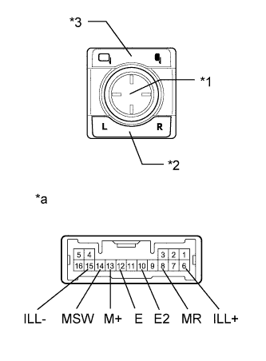

OUTER MIRROR SWITCH > INSPECTION |
| 1. INSPECT OUTER MIRROR SWITCH ASSEMBLY |
|  |
Inspect the outer mirror switch.
Select "L" on the mirror select switch.
Measure the resistance according to the value(s) in the table below.
| Tester Connection | Switch Condition | Specified Condition |
| 13 (M+) - 12 (E) | Mirror select switch L Mirror adjust switch pressed up | 90 to 110 Ω |
| Mirror select switch L Mirror adjust switch pressed down | 437 to 503 Ω | |
| Mirror select switch L Mirror adjust switch pressed left | 744 to 856 Ω | |
| Mirror select switch L Mirror adjust switch pressed right | 225 to 275 Ω |
Select "R" on the mirror select switch.
Measure the resistance according to the value(s) in the table below.
| Tester Connection | Switch Condition | Specified Condition |
| 13 (M+) - 12 (E) | Mirror select switch L Mirror adjust switch pressed up | 90 to 110 Ω |
| Mirror select switch L Mirror adjust switch pressed down | 437 to 503 Ω | |
| Mirror select switch L Mirror adjust switch pressed left | 744 to 856 Ω | |
| Mirror select switch L Mirror adjust switch pressed right | 225 to 275 Ω |
Inspect the retract switch.
Measure the resistance according to the value(s) in the table below.
| Tester Connection | Switch Condition | Specified Condition |
| 8 (MR) - 10 (E2) | Retract switch in retract position | Below 10 Ω |
| Retract switch in driving position | 10 kΩ or higher |
Inspect the switch illumination.
Apply battery voltage between the terminals of the light and check the operation of the light.
| Measurement Condition | Specified Condition |
| Battery positive (+) → Terminal 6 (ILL+) Battery negative (-) → Terminal 15 (ILL-) | Light comes on |
| *1 | Mirror Adjust Switch |
| *2 | Mirror Select Switch |
| *3 | Retract Switch |
| *a | Component without harness connected (Outer Mirror Switch Assembly) |